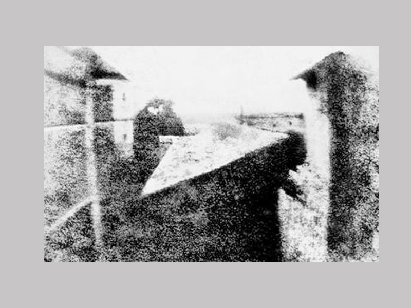
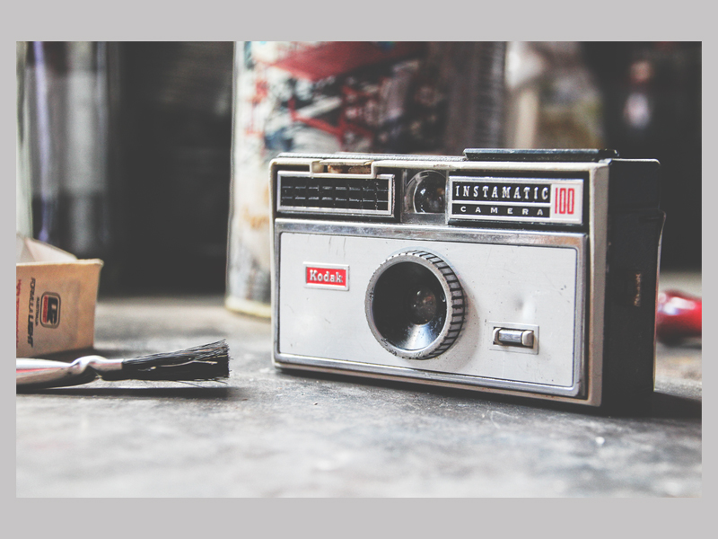
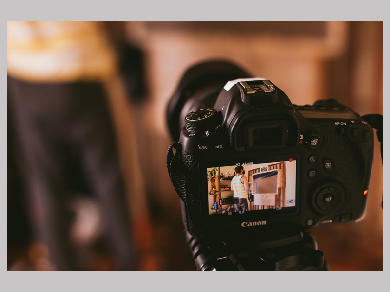

FOTOĞRAFIN ve KAMERANIN TARİHÇESİ FOTOĞRAF TARİHİNDEKİ ÖNEMİ GELİŞÖELERE YOLCULUK
Neredeyse 200 yıl içinde, kamera, bulanık fotoğraflar çeken düz bir kutudan günümüzün DSLR
(digital single-lens reflex; dijital tek yansımalı mercek) kameralarında ve akıllı
telefonlarında bulunan yüksek teknolojili mini bilgisayarlara dönüşerek büyük bir gelişme
göstermiştir.
Şimdi, bu bilimsel sanat dalının öne çıkan ve önemli gelişmelerine kısa bir göz atalım.
İlk Kameralar
Temel fotoğrafçılık kavramı, MÖ 5. yüzyıldan beri hayatımızın bir parçası. Iraklı bir bilim
insanı, 11. yüzyılda kamera obscura adlı buluşunu geliştirdikten sonra bu sanat dalının
doğuşuna tanıklık ettik.
Bu gelişmeye rağmen, kamera aslında görüntüleri kaydetmiyor, sadece onları başka bir yüzeye
yansıtıyordu. Görüntüler, binalar gibi gerçek nesnelerin doğru çizimlerini oluşturmak için
izlenebiliyorlardı ancak ters bir şekilde duruyorlardı.

İlk Kalıcı Görüntüler
Fotoğraf, günümüzde bildiğimiz şekliyle, Fransa'da 1830'ların sonlarında ortaya çıkmıştır.
Joseph Nicephore Niepce, bitüm kaplı kurşun-kalay alaşımlı plakasını ışığa maruz bırakmak
için taşınabilir bir kamera obscura kullandı. Bu, hızlı bir şekilde solmayan ilk kaydedilen
görüntüyü elde etmesini sağladı.
Niépce'nin başarısı bir dizi başka deneye yol açtı ve fotoğrafçılık çok hızlı ilerledi.
Daguerreotipler (gümüşlü levha üzerine çekilmiş fotoğrafları kapsayan bir kavramdır),
emülsiyon plakaları ve ıslak plakalar 1800'lerin ortalarında ve sonlarında neredeyse aynı
anda geliştirilmiştir.
Her emülsiyon türü ile fotoğrafçılar farklı kimyasallar ve teknikler denediler. Sonraki üç
başlık altında incelenen kavramlar, modern fotoğrafçılığın gelişiminde etkili olmuştur.
Dagerreyotipi
Niépce'nin deneyi Louis Daguerre ile bir işbirliği yapmasını sağladı. Bu işbirliği, modern
filmin öncüsü olan daguerreotipin yaratılması ile sonuçlandı.
Bakır levhayı gümüşle kapladılar ve ışığa maruz kalmadan önce iyot buharına maruz
bıraktılar.
Bunun dışında, plakadaki görüntüyü oluşturmak için, ilk daguerreotiplerin 15 dakikaya kadar
ışığa maruz bırakılması gerekiyordu.
Daguerreotip, 1850'lerin sonlarında emülsiyon plakaları ile değiştirilene kadar çok
popülerdi.
Emülsiyon Plakaları
Emülsiyon plakaları veya ıslak plakalar daguerreotiplerden daha ucuzdu ve sadece iki veya üç
saniye maruz kalma süresi gerektiriyordu. Bu, onları o zamanlar fotoğrafçılığın en yaygın
kullanımı olan portre fotoğraflarına çok daha uygun bir hale getirdi. İç savaştan birçok
fotoğraf ıslak plakalarda üretilmiştir.
Bu ıslak plakalarda, görüntü plakasında basit bir kaplama yerine, Collodion işlemi adı
verilen bir emülsiyon işlemi kullanılıyordu. Bu süre zarfında, odaklamaya yardımcı olmak
için kameralara körükler eklendi.
İki yaygın emülsiyon plakası tipi ambrotip (pozitif kolodyon) ve melainotip (veya ferrotip
olarak da bilinen bir kalayt) idi. Ambrotipler, daguerreotiplerin bakır plakası yerine bir
cam plaka kullanılarak oluşturuluyordu.
Melainotipler ise bir teneke levha
kullanılarak
oluşturuluyordu. Bu plakalar ışığa çok daha duyarlıydı; ancak, hızlı bir şekilde
geliştirilmeleri gerekiyordu. Fotoğrafçıların ellerinde bir çeşit kimya olması gerekiyordu;
birçoğu bunu bulabilmek için karanlık bir oda gibi olan, ikiye katlanan vagonlarda seyahat
etmiştir.

Kuru Tabakalar
1870'lerde fotoğrafçılık geleceğe doğru büyük bir adım daha attı. Richard Maddox, hız ve
kalitede ıslak plakalara neredeyse eşit olan kuru jelatin plakalar yapmak için önceki
buluşlardan yararlanarak bir şey geliştirdi.
Bu kuru plakalar gerektiği gibi yapılmak yerine saklanabiliyordu. Bu, fotoğrafçılara
fotoğraf çekmede çok daha fazla özgürlük sağlayan bir şeydi. Bu süreç aynı zamanda elde
taşınabilen daha küçük kameraların gelişmesinde de rol oynadı. Pozlama süreleri azaldıkça,
mekanik deklanşöre sahip ilk kamera geliştirildi.
Fotoğraf Pozlamalarına Giriş
Fotoğrafçılık, tanımı gereği, ışıkla görüntü yakalama sürecidir. Film veya dijital medya
kullanmanız fark etmez; kavram aynıdır. Bir fotoğrafı işe yarayan şey ışıktır ve iyi bir
fotoğraf elde etmek için uygun bir pozlama gerekir.

Herkes için Kamera
George Eastman 1880'lerde Kodak adında bir şirket kurana kadar fotoğrafçılık profesyoneller
ve çok zenginlere özgü bir şeydi.
Eastman, katı plakaların sürekli değiştirilmesini gerektirmeyen esnek bir rulo film yarattı.
Bu, 100 film pozunu tutan bağımsız bir kutu kamera geliştirmesine izin verdi. Kameranın
odaklama ayarı olmayan küçük bir lensi vardı.
Kullanıcı, modern tek kullanımlık kameralar gibi fotoğraf çekiyor ve filmin geliştirilmesi
ve baskıların yapılması için kamerayı fabrikaya geri gönderiyordu. Bu, ortalama bir insanın
karşılayabileceği kadar ucuz olan ilk kameraydı.
Film, bugünün 35mm filmine kıyasla hâlâ büyüktü. 1940'ların sonlarında, 35 mm'lik bir film
çoğu tüketici için yeterince ucuz bir hale gelmişti.
Savaşın Dehşeti
1930 civarında, Henri-Cartier Bresson ve diğer fotoğrafçılar, sahnelenen portrelerden ziyade
günlük hayatın görüntülerini yakalamak için 35 mm'lik küçük kameralar kullanmaya başladılar.
II. Dünya Savaşı 1939'da patlak verdiğinde, birçok foto muhabiri bu tarzı benimsedi.
I. Dünya Savaşı askerlerinin pozlanmış portreleri, savaş ve sonrasında grafik görüntülerin
esin kaynağı oldu. Joel Rosenthal'ın fotoğrafı, Iwo Jima'nın Raising the Flag gibi
görüntüleri savaşın gerçekliğini gösterdi ve Amerikan halkını daha önce hiç olmadığı kadar
canlandırmaya yardımcı oldu. Belirleyici anları yakalayan bu tarz, fotoğrafçılığın yüzeyini
oldukça etkin bir şekilde şekillendirdi.
Gelişmiş Görüntü Kontrolü
Fransızlar kalıcı görüntüyü bulmuşlar; Japonlar ise fotoğrafçıya daha kolay görüntü
kontrolünü sağlayacak çalışmalar yapmışlardır.
1950'lerde Asahi (daha sonra adı Pentax oldu) Asahiflex'i ve Nikon, Nikon F adlı kamerasını
tanıttı. Bu iki kamera SLR tipi kameralardı, buna ek olarak, Nikon F değiştirilebilir
lenslere ve diğer aksesuarlara sahipti.
Önümüzdeki 30 yıl boyunca SLR tipi kameralar tercih edilen kameralar olmuştur. Birçok
yenilik hem kameralar için hem de filmin kendisi için kullanılmaya başlanmıştır.
Akıllı Kameraların Tanıtımı
1970'lerin sonlarında ve 1980'lerin başında, görüntü kontrol kararlarını kendi başlarına
alabilen kompakt kameralar tanıtıldı. Bu"odakla ve çek" kameraları (kompakt fotoğraf
makinesi) deklanşör hızını, diyafram açıklığını ve odağı hesaplıyordu; ayrıca,
fotoğrafçılara kompozisyona konsantre olma konusunda özgürlük tanıyordu.
Otomatik kameralar sıradan fotoğrafçılar arasında son derece popüler hale geldi.
Profesyoneller ve kararlı amatörler kendi ayarlamalarını yapmayı tercih etmeye devam ettiler
ve SLR fotoğraf makinelerinde bulunan görüntü kontrolünün tadını çıkardılar.

Dijital Çağ
1980'lerde ve 1990'larda, çok sayıda üretici görüntüleri elektronik olarak depolayan
kameralar üzerinde çalıştı. Bunlardan ilki, film yerine dijital medya kullanan kompakt
fotoğraf makinesiydi.
1991 yılına gelindiğinde Kodak, profesyoneller tarafından başarılı bir şekilde
kullanılabilecek kadar gelişmiş ilk dijital kamerayı üretti. Diğer üreticiler bu gelişmeyi
hızla takip etmiştir; bugün ise Canon, Nikon, Pentax gibi diğer üreticiler de gelişmiş
dijital SLR (DSLR) kameralar sunmaktadır.
En temel kompakt fotoğraf makinesi bile artık Niépce'nin kalay plakasından daha kaliteli
görüntüler çekiyor ve akıllı telefonlar yüksek kaliteli basılı bir fotoğrafı kolayca
çekebiliyor.
Bir Kameranın Parçaları
Vücut:
Kamera gövdesi bir kameranın en temel parçasıdır. Filmi ve kamera kontrollerini tutan
kutudur . Lens ya gövdeye yerleştirilmiştir ya da gövdeye takılır. Gövde ayrıca deklanşörü,
flaşı, ışık ölçeri ve diğer kontrolleri çalıştıran bir pili de barındırır. Genellikle kolay
taşıma için bir kayışı kameraya bağlamak için halkalar da bulunur.
Mercek:
Mercek , ışığı gövdeye ve filme odaklayan kameranın bir parçasıdır (veya kamera için bir
eklentidir). Diyafram da merceğin içinde bulunur.